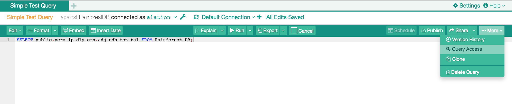
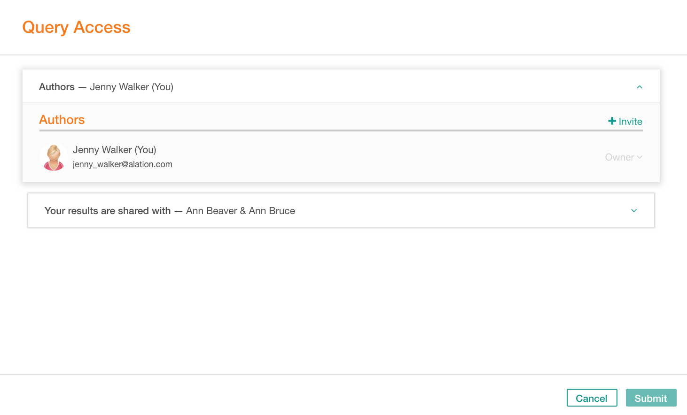
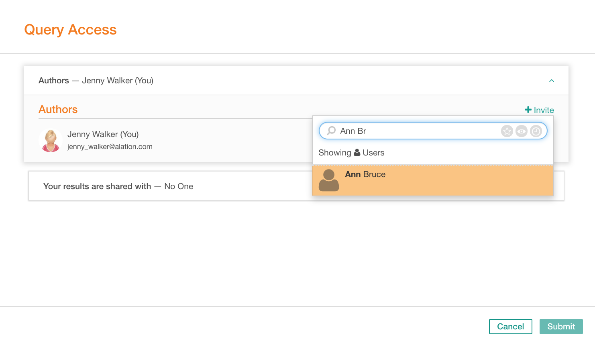
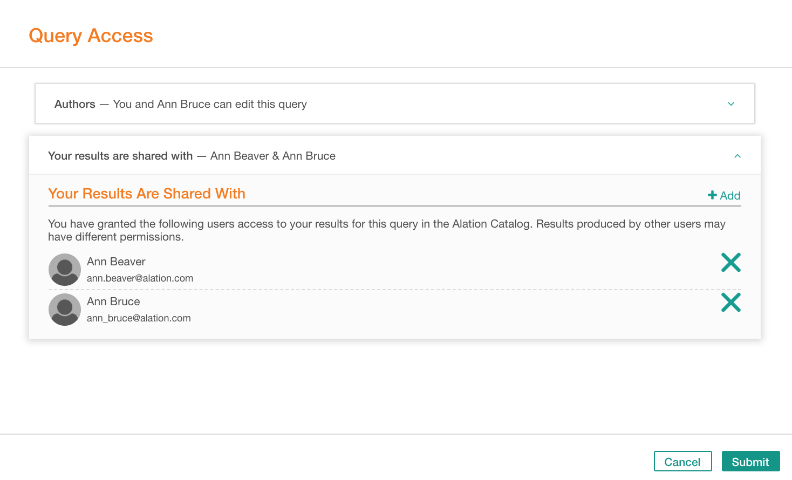
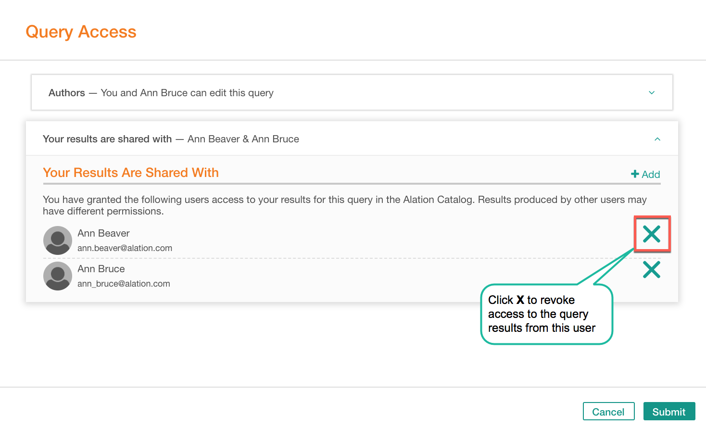
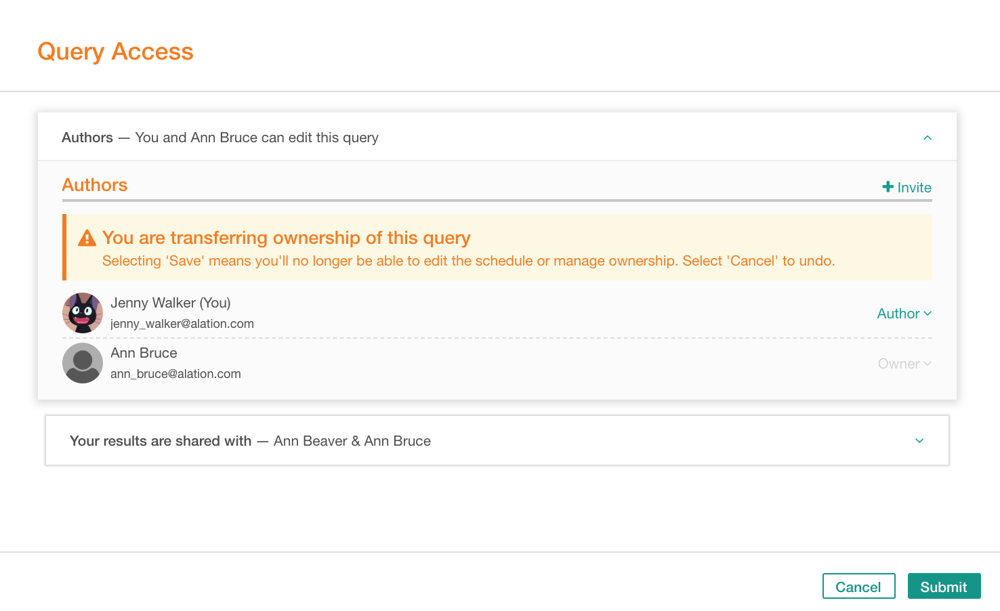

Granting Access to Queries in Compose¶
Alation Cloud Service Applies to Alation Cloud Service instances of Alation
Customer Managed Applies to customer-managed instances of Alation
Applies to releases V R6 (5.10.x) to 2022.4
Note
This page is about sharing and accessing queries in version 2022.4 and earlier. In version 2023.1, we introduced a feature for granular query permissions that substantially changes sharing and access for queries. See Share and Access Queries - 2023.1 and Later for details.
Query owner and authors can invite people to collaborate on a query by granting edit access to this query to others. There are several alternative ways to add Authors to a query. This article explains how to add authors in Compose. You can also do it in the Catalog.
It is important that you have whitelisted the Alation application in your network. Compose will send out email notifications to Authors and Viewers when they are invited and when queries are shared with users.
Giving Query Access¶
Open your query in Compose.
Note
Your means you are the query owner, author, or a server admin.
On the toolbar, on the right, click More… and in the menu, click Query Access. This will open the Query Access dialog:
To designate authors, in the Query Access dialog, click the Authors section:
This opens the list of existing authors and reveals the Invite button. Click Invite and select a user. This user will be added as an author:
Note
The current query owner or a Server Admin can transfer ownership to a different user: Transferring Ownership.
If you select the Owner access for a user, after submitting the change, the ownership will be transferred from the current query Owner to this new user. The current owner’s access will be switched to Author.
In the Query Access dialog, you can also view which users have access to your results of this query: click Your Results Are Shared With panel to open the list of users with access to some or all of your results for this query:
Note
You can only share your results, that is, the result tables that were created when you ran this query in Alation. Results created by other users may have different access permissions.
If you want to stop sharing your results with specific users, remove these users from the shared results list by clicking the X button next to the user’s name.
In the dialog, click Submit. The newly designated authors will receive email notifications with a link to the query.
Giving Access While Sharing¶
You can also give access to a query when you are sharing it with users.
Changing Access Permissions¶
As a query owner, author or an intervening server admin, you can change query access in the following ways:
Add new Authors: Giving Query Access.
Remove a user from authors. This action will revoke the edit access from a user.
Transfer ownership to a user. This can be done by owner and server admin.
Transferring Ownership¶
Transferring query ownership means the previous owner no longer will have the owner-level access to the query. This can only be done by the current owner or by a user with the Server Admin role.
To transfer ownership,
Open your query in Compose.
On the toolbar, on the right, click More… and in the menu, click Query Access. This will bring up the Query Access dialog for this query.
In the Query Access dialog, click the Authors section. This opens the list of existing authors.
Find the user to transfer ownership to or find and add a new user by clicking Invite.
For this user, in the permissions dropdown, select Owner. Note that when you transfer ownership from yourself, you will remain as author of this query:
Click Save. You have designated a new owner of this query.
Note
You can remove yourself from authors of a query by selecting the Remove action for yourself. Note that if you remove yourself from authors, your edit access will be revoked, and you will remain as query viewer.